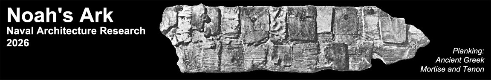

T. Lovett | Last updated: July 2026
| Page | Contents | Status |
|---|---|---|
| aig-enhance | Engineering enhancements to AiG Ark Encounter — rotating vessel vs valve, hydroponic marble test, reptile jar drainage | Active |
| animals-biogeography | Post-flood timber distribution, animal dispersal, ancestral kinds, dietary specialisation, coal/oil formation, flood geology | Active |
| animals-zones | Three waste management zones, deck assignment, bird manifest, clean animal adjustment, diet, torpor | Active |
| hull-ancient | Plank-first shell construction lineage — mortise and tenon joinery, stressed skin philosophy, Mediterranean tradition, WW1 rediscovery, descent from Noah | Active |
| hull-cubit | Cubit selection (REC 524mm), Nippur rod reliability, reconciliation with AiG Ark Encounter, moulded vs outside planking convention, promenade argument | Confirmed |
| hull-skin | Skin specification, scantlings, close-chocked framing, bronze spider straps, plank bending, wet fitting | Active |
| internal-arrangement | Bulkheads, ramps, general arrangement | Active |
| internal-bow | Bow compartment — extent, collision bulkhead, storage | Active |
| internal-decks | Deck structure, deck heights, deck terminology | Active |
| internal-moonpool | Double moon pool complex, seven functions — ventilation pumping, waste disposal, bilge, weathervaning, heave/pitch/roll damping, launch rope conduit | Active |
| internal-stern | Stern compartment — family quarters, moon pool zone, service area | Active |
| papers-book | Inconvenient Evidence: The Naval Architecture of Noah's Ark — proposed second book, chapter structure, publisher considerations, relationship to paper series | Concept |
| papers-index | Papers — published and in development; argument skeletons and working drafts | Active |
| papers-vane | Passive weathervaning working draft — 6:1 proportions optimised for organised following sea; completing Hong et al. confused sea analysis | In development |
| papers-kpr | Kopher working draft — pine resin vs petroleum, inside and out, construction preservation, fire assessment, geological implication | In development |
| papers-fit | How Many Animals Fit? Volume-first capacity analysis — engineering upper bound on kind count; convergence with AiG baraminology ~1,400 kinds | In development |
| papers-gfr | Gopher wood working draft — hapax legomenon, scholarly silence, extinction hypothesis, naval architecture property profile | In development |
| papers-hong | Hong Revisited working draft — material model critique, confused sea assumption, box hull limitation, roll modelling gap, transcription error | In development |
| papers-ante | The Words That Didn't Survive the Flood — Cohen's method applied to Genesis 6 word cluster; Library of Alexandria as witness; gopher, kopher, tebah, sohar as case studies; the flood got there first | In development |
| papers-tbh | Paper 1 working draft — Noah Never Built an Ark: Why Tebah Does Not Mean "Box" — Cassuto, Cohen, Spoelstra, LXX split, Moses basket reductio, Bayesian tables | In development |
| papers-past | Hong et al. (1994) KRISO study, Lovett (2024) AiG proportions paper — foundation peer-reviewed work | Active |
| references-aig | All T. Lovett AiG publications — book, book chapters, magazine articles, in-depth articles, feedback, video | Active |
| references-biblical | Biblical and ANE scholarship — Cohen (1972), Spoelstra (2020), Cassuto, LXX, Hebrew lexicons, Gilgamesh | Active |
| seakeeping-ancient | Ancient hull form asymmetry — Syros terracotta, Thera fresco, Minoan seals, Chinese boat character, Casson evidence for passive stormkeeping | Active |
| seakeeping-model | Physical model testing — 1:79 steel model, bathtub seiche problem, lake free decay programme, AMC basin proposal, paired model comparative testing | Programme planned |
| seakeeping-waves | Wave environment phases, vegetation mat damping, SPM/SMB fetch-limited wave height, wind waves vs current, Genesis 8:1 engineering margin | Active |
| seakeeping-weathervaning | Wind vane principle, bow/stern external form asymmetry, keel taper, stern trim contribution, phase relevance | Active |
| services-light | Light and ventilation — sohar (Genesis 6:16); translation survey; engineering analysis; antediluvian vocabulary | In development |
| services-passive | Complete register of all self-regulating systems with mechanism and benefit | Active |
| services-ventilation | ṣohar design, stack effect, outboard vent shafts, air quality, cedar aromatics, deck-by-deck ventilation | Active |
| services-waste | Three-zone system, subfloor design, crew workload, waste quantities, closed-loop bird guano garden | Active |
| services-water | Ballast zone, header tanks, rainwater harvesting, bamboo distribution, tilt-weir pump, animal consumption | Active |
| !site-conventions | Taxonomy, naming rules, workflow, AI assistant instructions | Meta |
| stability-draft | Genesis 7:20 draft constraint, stern trim, displacement, mass distribution, rock ballast, KG provisional | Active |
| stability-gm | KB, BM, KM, target GM, required KG, roll period | Active |
| stability-simulators | GZ curve plotter and dynamic roll simulator — algorithm documentation, parameters, validation targets. HTML5 reimplementation of 2004–2005 VB6 programs | In development |
| stability-volume | Primary dimensions, master deduction table, animal zone, animal count, displacement summary | Pending 524mm update |
| tbh-transmission | Tebah transmission table — scholarly chain from Erman (1900) through BDB to present; Cohen cited but never engaged; corrupted manuscript analogy | In development |
| technology-materials | Timber species, pine pitch (kopher), zopissa caulking, bronze alloy, lignum vitae wedges, cedar aromatics | Active |
| thirdparty-amc | AMC collaboration proposal, model testing programme, qualification pathway | Proposal |
| voyage-journal | Genesis 7–8 as ship's log — precision dating, rooster chronometer, Noah had time to write, reconnaissance programme | Active |
| voyage-launch | Launch sequence — moon pool rope geometry, anti-capsize mooring, water level indicator, axe cut release | Active |
Key Parameters
| Parameter | Value | Notes |
|---|---|---|
| Cubit | 0.524m (Royal Egyptian) | Confirmed — supersedes 0.518m Nippur of Lovett (2006) |
| Convention | Outside structural planking | AiG = moulded (Nippur) — same vessel, different convention |
| Length | 157.2m | 300 × 0.524m |
| Beam | 26.2m | 50 × 0.524m |
| Height | 15.72m | 30 × 0.524m |
| Draft (target) | 7.86m | 15 cubits — Genesis 7:20 — to keel bottom at stern |
| Stern trim | ~2m | Weathervaning + passive bilge drainage |
| Block coefficient | 0.85 | |
| Hull skin (bottom) | ~1.8m | 2 sacrificial + 4 structural × 5" + 32" frames + 2 × 4.5" ceiling |
| Hull skin (sides) | ~1.7m | 1 sacrificial + 4 structural × 5" + 32" frames + 2 × 4.5" ceiling |
| Plank thickness | 5" (127mm) | Max for cold water soak bending at 17.3m bow radius |
| Frame depth | 32" (812mm) | |
| Target GM | ~0.85m | Under review — survival GM may be higher |
| Ballast zone | ~4,750 m³ | Below Deck 1, 21 baffled cells |
| Moon pool | ~728 m³ | Double complex — pending CAD confirmation |
| Estimated displacement | ~21,000 tonnes | Provisional — pending 524mm update |
| Primary timber | Old growth pine equivalent | 650 kg/m³ |
| Caulking | Zopissa (pine pitch + beeswax) | kopher — Genesis 6:14 |
Pending: All volume tally figures require updating from 0.518m to 0.524m cubit. Volume increases ~1.7%.